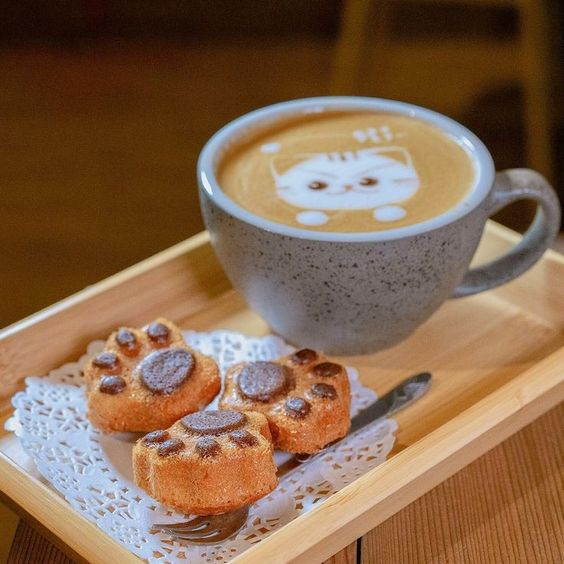
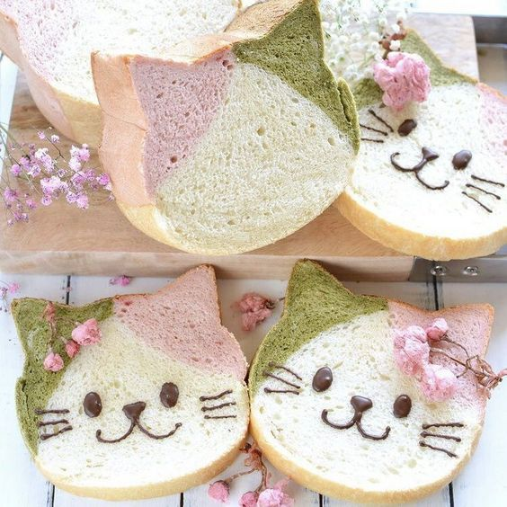
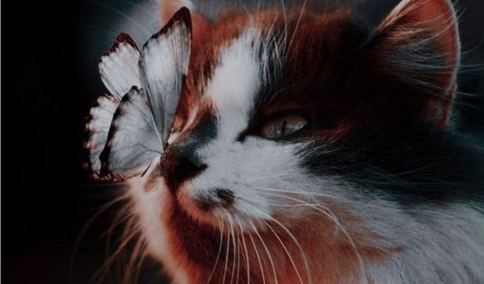
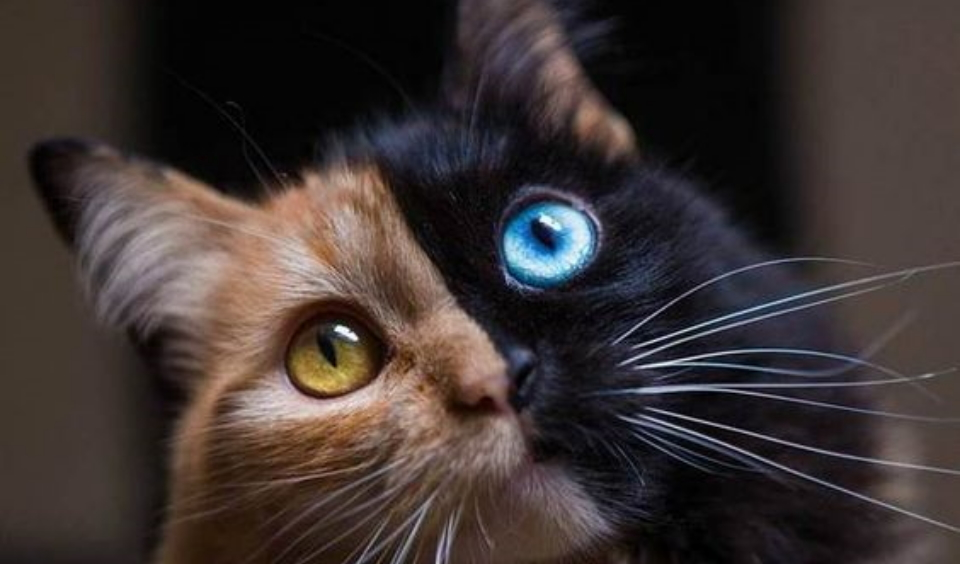
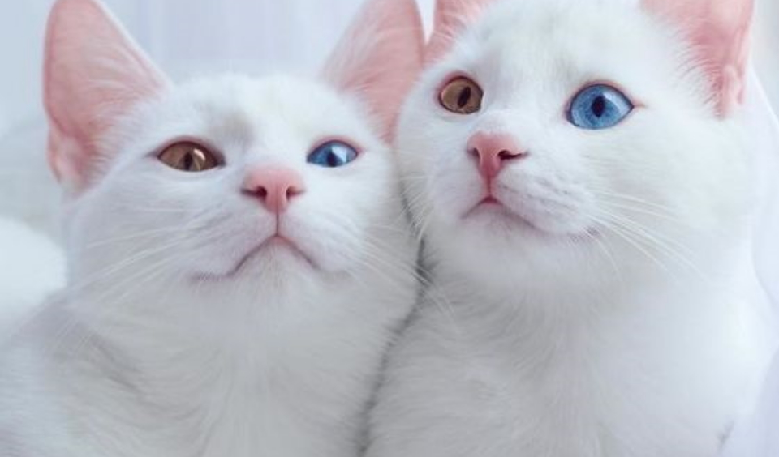

Новости кафе

Новинка! Кошачьи лапки за каждый кофе латте с рисуном.

Теперь есть хлеб с мордочкой кошки со вкусом мотти и сакуры

В нашем кафе проживает 14 кошек как породистых, так и беспородных. Каждый кот или кошка дружелюбные, ласковые, очень любят людей. Однако есть и любители личного пространства, которые не дадут вам себя просто так погладить.

В нашем кафе вы можете преобрести различные напитки: чай, кофе, соки, газировку. Также мы продаем кондитерские изделия от разнообраззных кексов до тортов. Помимо этого вы можете прийти со своей едой, но вам придется тщательнее следить за ней, чтобы кошки ничего не съели :З
